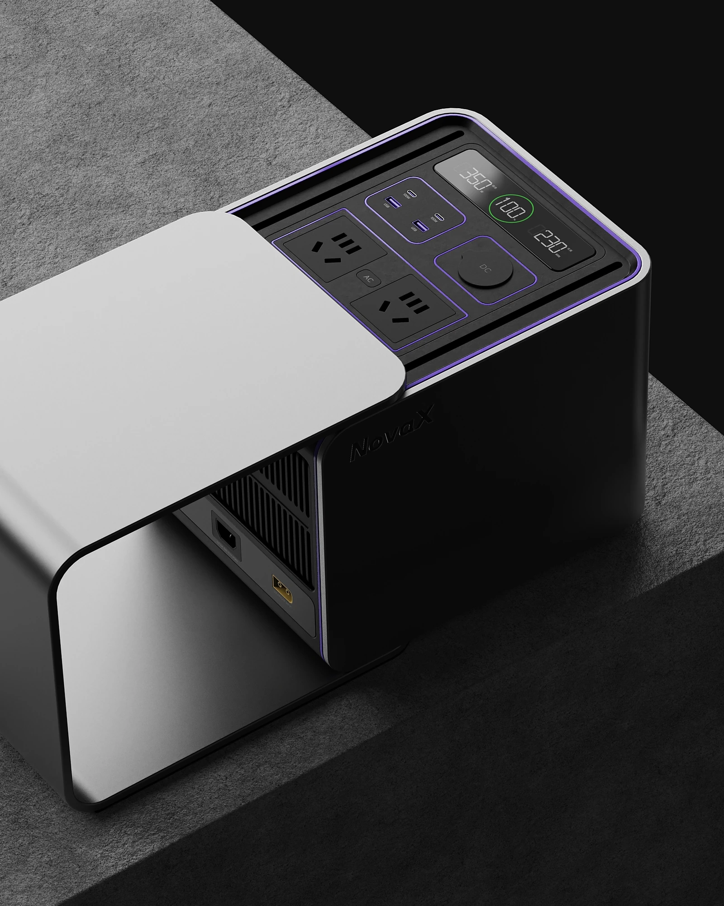
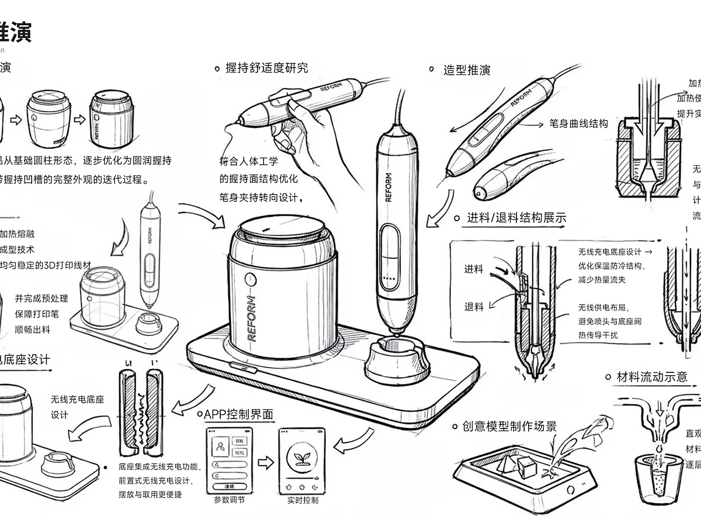
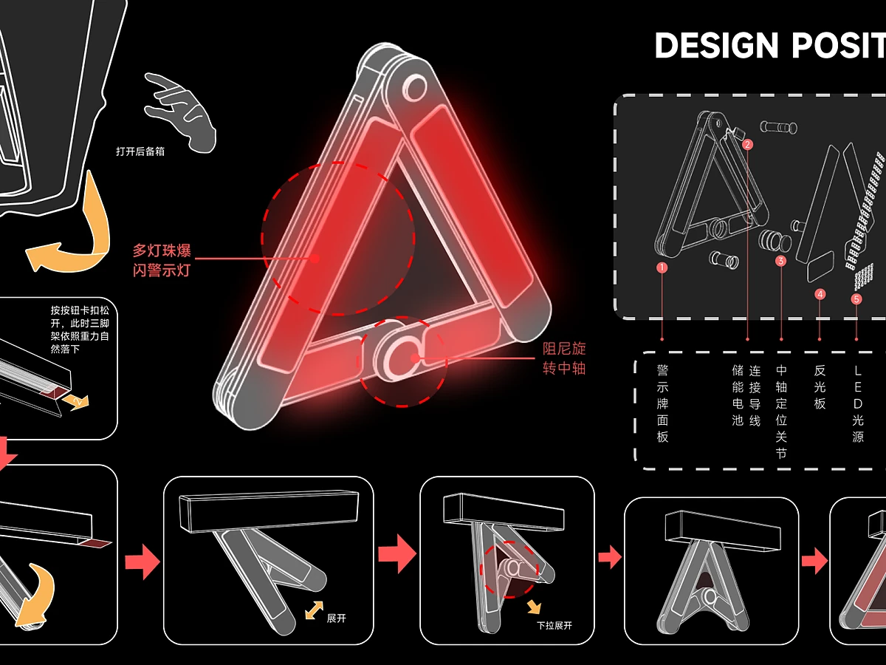
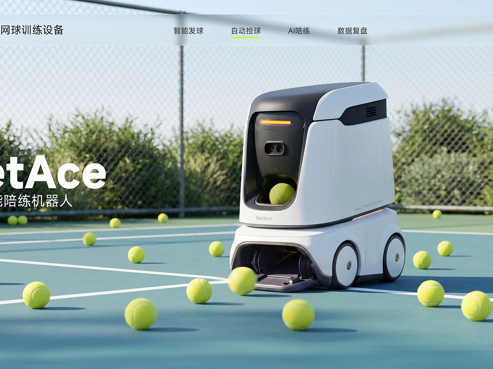
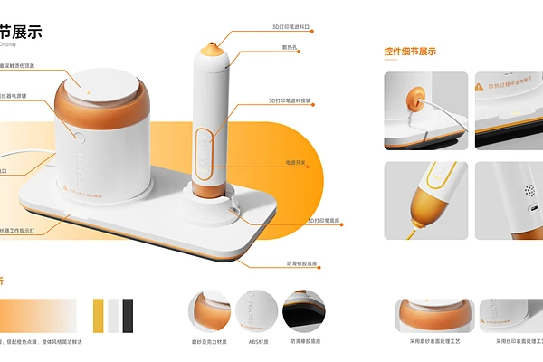
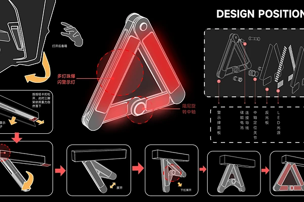
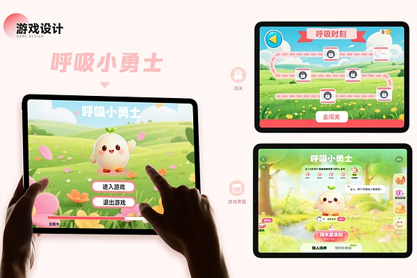
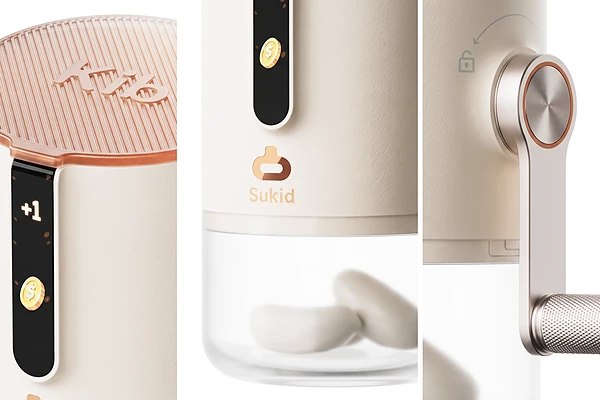
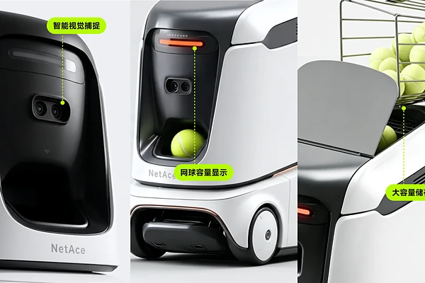
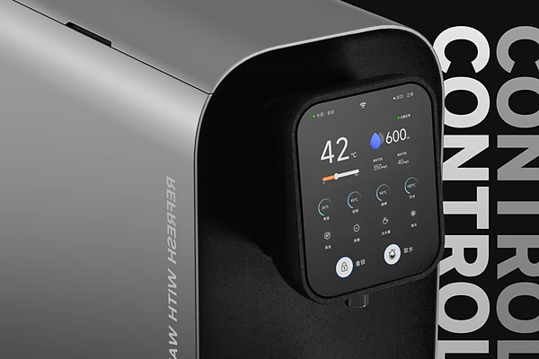

尖叫®
STUDIES / 作品集

尖叫工业设计教育，是一间以工业设计作品集为方法的研究型工作室。我们不做模板的搬运，而是陪你把一个问题，推演成一套有判断、有证据、有温度的设计叙事。
我们关心的，不只是页面是否好看，而是作品是否经得起追问。
- 01以问题为起点以逻辑为骨架
- 02以图像为语言以细节为证据
- 03以作品见思考以叙事见判断
精选作品(09)
九件作品，九种把问题变成答案的方式。形态、材料与图像，只是思考留下的证据。
2023—2026 / 09 PROJECTS细节档案(06)
不只看整件作品，也看那些真正决定完成度的局部。
DRAG TO EXPLORE调研 定义 叙事
每一个环节，都指向同一个答案。
先找到值得回答的问题。
从使用场景、结构与约束出发，收集能支撑判断的证据。我们不急着画形状，先把问题看清楚。

让形式服从于判断。
定义设计主张、形式语言、CMF 与关键细节，再一轮轮收敛。每一个圆角与接缝，都应该有理由。

让作品被看见，也被相信。
把顺序、图像、字体与留白组织成一套叙事，让读者沿着你的判断，走到作品真正想表达的地方。

不是速成
是长期主义
作品集不是一场短跑。它是一次把观察、判断与手艺放在一起的长期练习。
ABOUT THE CRAFT / 06 NOTES以问题为起点

不从风格开始，而从“为什么需要它”开始。问题是作品的骨架，也是所有形式的来处。
↗一人一叙事

每个项目都有自己的节奏与语气，拒绝把一套版式复制到所有作品里。叙事应该长成它自己的样子。
↗让图像自己说话

用构图、光线与留白建立秩序，而不是用装饰填满页面。好的图像会替文字完成一半的表达。
↗细节构成完成度

圆角、接缝、材质、字体与图注，决定作品被相信的程度。完成度不是多余，是对观看者的尊重。
↗审美来自长期观看

品味不是滤镜，是持续观看、比较与判断之后留下的东西。看得足够多，才知道什么可以不要。
↗作品是最终的答案

所有讨论最后都要回到作品：它是否更清楚、更准确、更动人。作品自己会回答。
↗关于作品集，
我们更愿意
回答这些。
不是流程说明，也不是标准答案。只是那些真正影响一本作品集的问题。
不是做了多少项目，而是这些项目是否指向同一种判断力。读者记住的往往不是某一个造型，而是你如何看问题、如何做选择，以及你是否真的在意自己做的东西。
模板解决“看起来完整”，却解决不了“为什么这样排”。版式是叙事的一部分：什么先出现、什么被放大、哪里留白，都会改变读者理解作品的方式。
从问题、约束、推演到结果，至少要让人看见你做过选择。不是把所有过程都放上去，而是留下那些真正改变了设计的节点。
清晰度不是参数，是尊重。它决定了材质是否可感、细节是否可信，也决定了读者愿不愿意停下来多看一秒。模糊的图片会让再好的设计也显得犹豫。
可以，但前提是诚实面对自己的知识边界。跨专业的优势不是“什么都懂”，而是能把另一种视角带进设计，并用足够扎实的研究把它落到实处。
给愿意认真看的人，也给只想快速判断的人。好的作品集应该同时经得起浏览与细读：第一眼有吸引力，停下来之后仍然有内容。